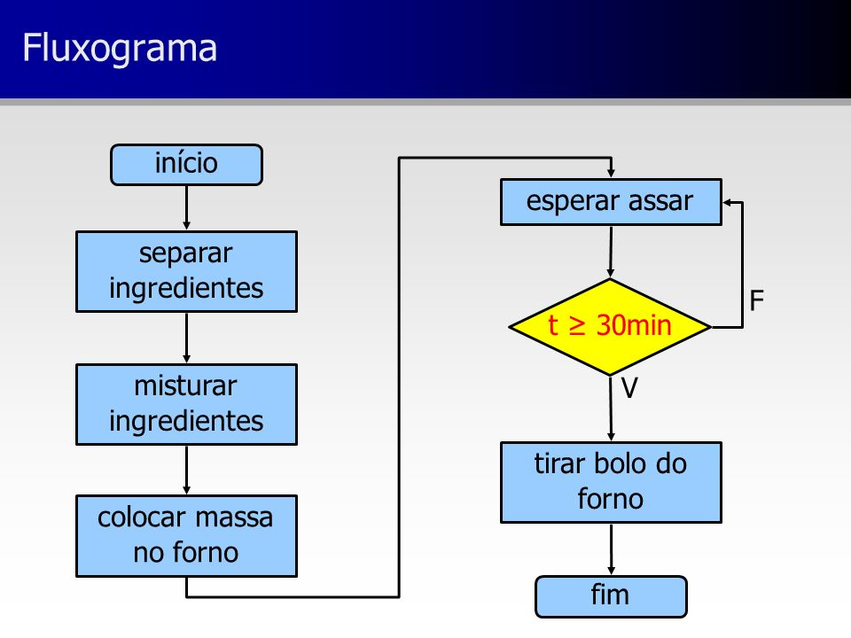
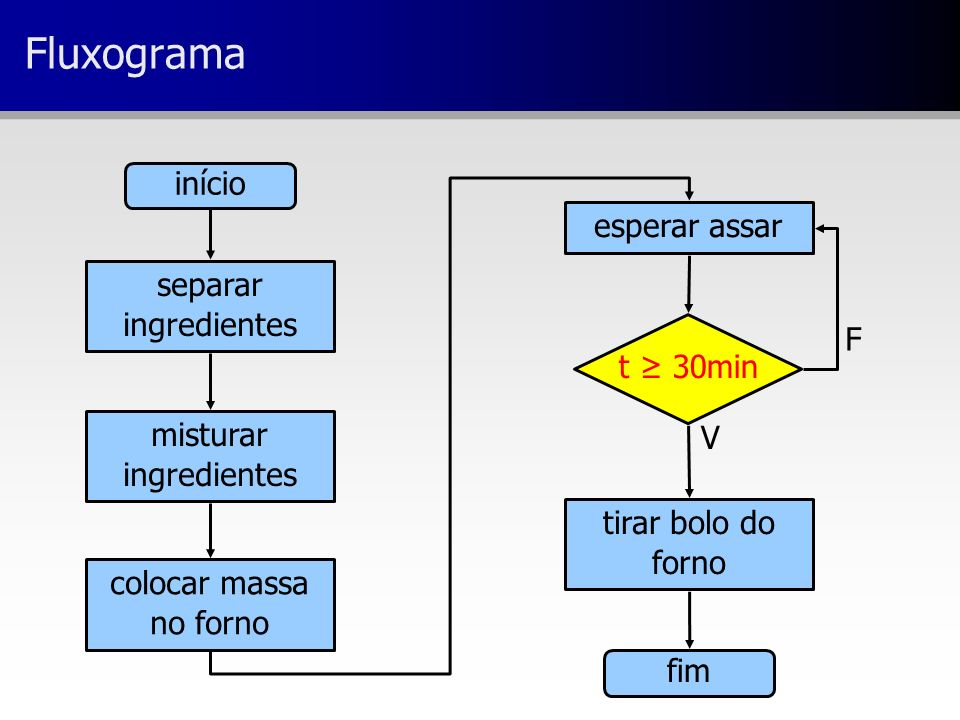
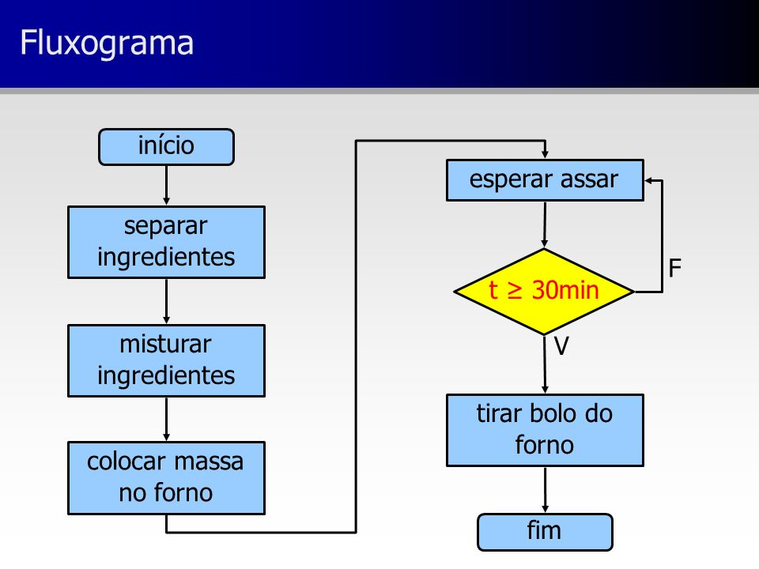
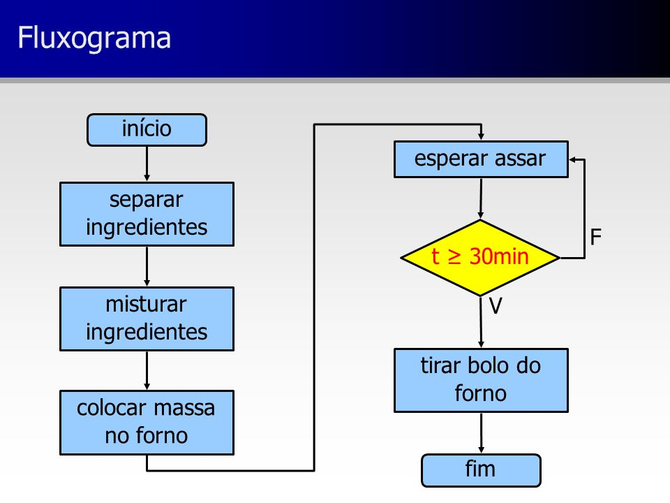

O pensamento computacional pode ser definido como uma habilidade para resolver problemas e desafios de forma eficiente, assim como um computador faria. Que tem como objetivo facilitar os problemas do nosso dia a dia.
A metodologia utilizada foram pesquisas nas escolas para saber o quanto as pessoas conhecem sobre o pensamento computacional e foi concluido que
quase nenhuma das pessoas sabiam o que era.
O primeiro é a "decomposição"que consiste em dividir o problema em subproblemas para facilitar a compreensão
O segundo é a "abstração" que reconhece o que é mais importante e resolvê-lo primeiro
O terceiro é o "reconhecimento de padrão" que consiste em identificar repetições e similaridades dos problemas
O quarto é o "algoritmo" que equivale a ordenar uma sequência de passos para resolver o problema
Além de ser usado em situações cotidianas, o pensamento computacional é muito importante na escola, pois, por meio dele, as crianças aprendem a pensar de forma crítica e passam a revisar o que produzem. Quando bem aplicado, os alunos passam a resolver situações com base nos quatro pilares do pensamento computacional, notando padrões e chegando a conclusões de maneira lógica.
Autores: Leandro da Silva Camargo
Universidade Federal de Pelotas (UFPel);
Claudio Cleverson de Lima
Instituto Federal Sul-rio-grandense (IFSul);
Ana Marilza Pernas
Universidade Federal de Pelotas (UFPel);
Adenauer Yamin
Universidade Federal de Pelotas (UFPel).
[s.l.]. [25/jun/2023]